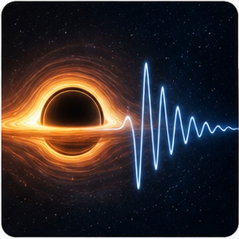

Black Hole Ringdown and Dark Matter
I study how dark matter halos modify quasinormal modes, light-ring properties and late-time tails. I also combine ringdown spectra with tidal Love numbers to break degeneracies between halo profiles that appear similar in ringdown alone.